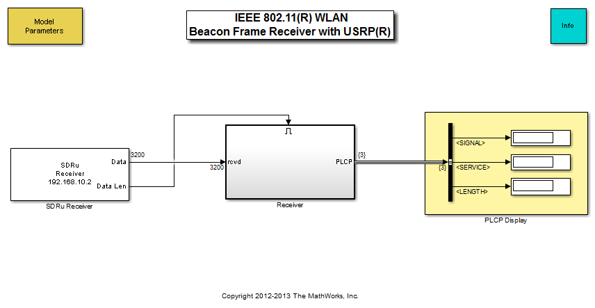
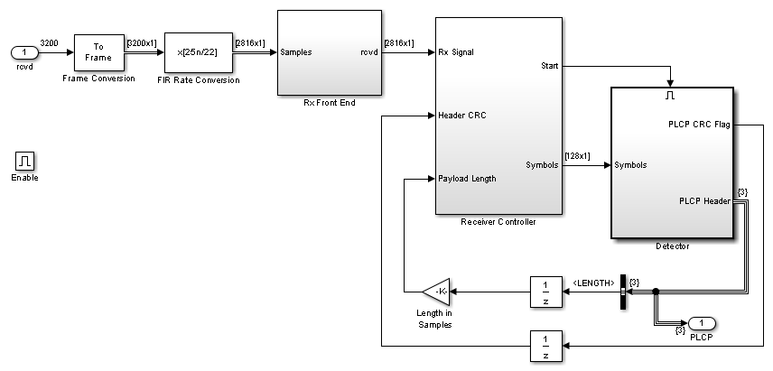

IEEE 802.11 WLAN - Beacon Frame Receiver with USRP® Hardware
This example shows reception of beacon frames in an 802.11 wireless local area network (WLAN) as described in [ 1 ]. The example utilizes USRP® hardware to receive radio signals and transfer to Simulink® for processing. For more information refer to IEEE 802.11 WLAN - Beacon Frame and IEEE 802.11 WLAN - Beacon Frame with Captured Data examples.
Contents
Structure of the Example
The model has three main parts:
- Model Parameters block, where you can adjust several receiver parameters,
- 802.11 receiver, which comprises a receiver front end, receiver controller, and detector,
- Results, where you view several signals and the received information.
The following describes modifications made to the model presented in IEEE 802.11 WLAN - Beacon Frame Receiver with Captured Data example to make it work with the USRP® hardware.
This 802.11 WLAN example includes all the receiver signal processing in an enabled subsystem. Connecting the Data Len output of the SDRu Receiver block to the enable input of the subsystem ensures that the receiver only processes valid data. This approach is a best practice when using the SDRu Receiver block.
SDRu Receiver
802.11 uses 1e6 symbols per second for beacon signaling. Since the standard [ 1 ] calls for a spreading factor for 11, the chip rate is 11e6 chips per second. The receiver needs at least two samples per chip and the maximum data rate the USRP® hardware can pass to the host computer is 25e6 samples per second. Therefore, this example uses a decimation factor of four.
Running this receiver simulation requires more time than processing the same data in real-time, especially when using the visualization scopes. To help alleviate this time requirement, the SDRu Receiver block uses burst mode processing. Burst mode processing enables you to utilize the visualization capabilities of Simulink, while processing real data without the need of capturing and saving it.
In burst mode, the block stores a contiguous burst of samples. The number of samples is determined by the values you specify for the number of frames in burst parameter and the frame length parameter. Each Simulink time step, the SDRu Receiver block sends a frame of samples to the Receiver subsystem. Most Wi-Fi routers use a beacon interval of 100 Time Units (TU), which is 102.4 msec and the beacon packet length of approximately 3 msec. Therefore, the receiver requires at least 106 msec of data to receive one beacon packet. A frame length of 3200 samples and 860 frames per burst, results in more than 110 msec of data, which is enough to receive at least one beacon packet per burst.
Receiver
Since the chip rate is 11e6 chips per second, the receiver utilizes an FIR Rate Conversion block that resamples the signals to 22e6 samples per second. This approach provides an oversampling factor of two.
Running the Example
If the received signal is too weak or too strong, you might notice some garbled message output. In that case, you can change the gain of the SDRu Receiver block for better reception.
To run this example, turn on the USRP® hardware and connect it to the computer. Then, run the model. You can observe several signals in the scopes. The (MAC Protocol Data Unit) MPDU GUI figure shows (Physical Layer Convergence Procedure) PLCP and MPDU CRC status and also the content of correctly decoded MPDU packets.
Exploring the Example
You can try different channel numbers from the Model Parameters block mask. The most widely used channels are 6 and 11.
This example allows you to modify several receiver parameters through the Model Parameters block mask dialog to optimize the receiver performance. If you notice that the (Automatic Gain Control) AGC gain reaches its maximum gain even when your signal is present at the receiver input, increase the maximum gain of the AGC. If the AGC is slow to respond to changes in the input signal amplitude, increase the AGC step size. Observe the AGC behavior in the AGC scope.
If your signal results in smaller peaks in the Synchronization Scope, which do not turn the receiver on, reduce the synchronization threshold.
Selected Bibliography
- IEEE Std 802.11-2007: IEEE Standard for Information technology - Telecommunications and information exchange between systems - Local and metropolitan area networks - Specific requirements, Part 11: Wireless LAN Medium Access Control (MAC) and Physical Layer (PHY) Specifications, IEEE, New York, NY, USA, 1999-2007.
Copyright Notice
USRP® is a registered trademark of National Instruments Corp.